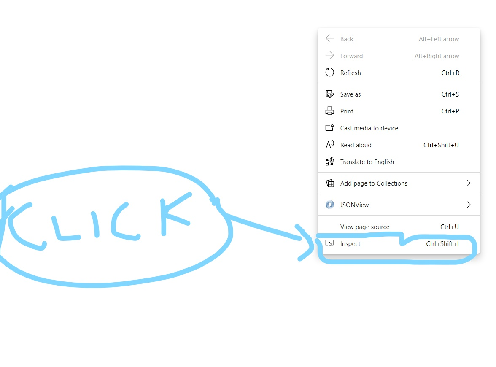

Getting Started with VS Code and Console
VS (Visual Studio) Code .
Visual Studio Code is a free source-code editor made by Microsoft for Windows, Linux and macOS. Features include support for debugging, syntax highlighting, intelligent code completion, snippets, code refactoring, and embedded Git.
Console Settings
Right click and you will find Inspect or Shotcut is Ctrl + shift + I, below is the image .
After clicking on it you will see a pop-up coming on the left and then click "Console" on it